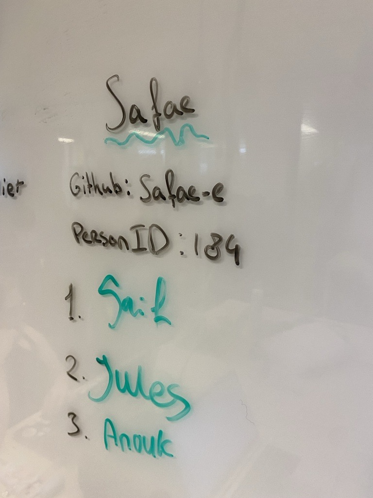

Daily checkout, maandag 3-2-25
Vandaag zijn we begonnen met werken uit de WHOIS database. We hebben onze eigen informatie toegevoegd en hebben node JS geïnstalleerd. Ik heb een error in mijn terminal in VS code,
maar zodra ik het via de node JS terminal doe dan werkt het wel. Heel vervelend. We hebben ons oude visitekaartje in liquid gezet.
Daily checkout, woensdag 5-2-25
We gaan ons oude visitekaartje op nieuw ontwerpen en coderen dus heb ik een breakdown schets gemaakt. Ik vond het nog best wel ingewikkeld om met node JS te werken. Omdat het allemaal net even anders werkt dan ik gewend was.
Daily checkout, vrijdag 7-2-25
Wat heb ik vandaag gedaan
Ik heb vandaag een code review gedaan bij 3 studenten uit de andere klas. Bij
Luc,
Safae en
Stella.
Na de les hadden we een expositie van de visitekaartjes. Het was heel leuk om de verschillende ontwerpen te zien, vooral omdat veel mensen een totaal andere uitgesproken stijl hebben!

Daily checkout, maandag 10-2-25
Wat heb ik vandaag gedaan?
We zijn indedeeld in groepjes, ik zit met Süleyman en Senne. We hebben schetsen gemaakt voor het ontwerp van de squadpage.
Ik ben van 1 tot half 5 nog lekker bezig geweest met mijn I Love Web, ik heb een heel to do lijstje af kunnen maken waar niet eens alles op stond wat ik heb gedaan vandaag.
Daily checkout, woensdag 12-2-25
Wat heb ik vandaag gedaan?
Ik ben bezig geweest met het uitzoeken hoe het filteren werkt. Ik ben ook met de css aan de slag gegaan. Ik kreeg heel veel niet werkende dingen die wel zouden moeten werken naar mijn hoofd gesmeten. Daardoor ben
ik alleen maar bezig geweest met dingen fixen en heb ik niet heel veel progress kunnen maken. In de middag had ik mijn End term assesment gehad bij Krijn en Charley. Het was een fijn gesprek en ik heb hem ruim gehaald met 22 punten.
Daily checkout, vrijdag 14-2-25
Wat heb ik vandaag gedaan?
Ik heb samen met (vooral) Luuk en Senne en Süleyman een code en design review gedaan op Kate, Kerem, Miel en Recep. Alle ingeschoten issues:
Voorjaars vakantie
Daily checkout, maandag 24-2-25
Ziek, wel de hobby pagina's ontworpen in figma.
Daily checkout, woensdag 16-2-25
Wat heb ik vandaag gedaan?
Vandaag hebben we de wrap-up gedaan. Ik heb met luuk een stand up gedaan over wat er nog moet gebeuren en waar we elkaar kunnen helpen. Aan de hand van die
snelle stand up hebben we een lijst gemaak van wat er nog gedaan moet worden. Hieruit hebben we een planning gemaakt per persoon. We hebben bedacht dat iedereen
gaat doen waar hij/zij het beste in is. Ik ben nog even aan de slag gegaan met figma
om een mobile ontwerp van ons huidige desktop ontwerp te maken. Daarna heb ik issues aangemaakt voor mij en de rest van de groep zodat we die in het project board kunnen zetten.
Daily checkout, vrijdag 28-2-25
Wat heb ik vandaag gedaan?
We hebben vandaag de retrospect gedaan van sprint 7. We hebben metaforen getekend over hoe onze samenwerking ging. We waren allemaal heel tevreden over hoe het verlopen was. We kwamen
erachter dat iedereen inmiddels een beetje weet waar zijn of haar sterke en minder sterke kanten liggen en iedereen heeft aan de hand daarvan zijn of haar eigen steentje bijgedragen.
Aan het einde van de dag hebben we allemaal in teams onze squadpages gepresenteerd, het was heel leuk om te zien wat de rest heeft gemaakt!
Vragenlijst / zelf test uit de retrospect sprint 7:
Legenda:
🫣 0 punten - Ik ben hier nog niet aan toegekomen
😅 1 punt - Ik heb hiermee geëxperimenteerd, maar ik weet nog niet goed wat dit is
🤓 2 punten - Ik begrijp dit, maar kan dit nog niet (helemaal) zelfstandig toepassen
🗠3 punten - I got this!!!
Vragen:
- Ik kan uitleggen wat NodeJS is en waarvoor het gebruikt wordt 😅
- Ik weet wat het doel van package.json is en heb hier aanpassingen ingemaakt 🤓
- Ik heb met npm packages geïnstalleerd en gebruikt in het bestandserver.js 😅
- Ik kan met commando's in de terminal een NodeJSproject stoppen en starten 🤓
- Ik weet waarom ik mijn NodeJSproject regelmatig moet herstarten en kan dit uitleggen 🤓
- Ik heb een strategie voor debuggen inNodeJS 🫣
- Ik kan uitleggen wat Express.js doet en waarom het nodig is om met NodeJS een website te bouwen 🫣
- Ik weet wat routes zijn en kan zelf een nieuweroute aanmaken 🤓
- Ik weet wat request en response argumenten zijn in een functie voor het laden van data 😅
- Ik heb gebruik gemaakt van een request parameter om specifieke data te laden 😅
- Ik kan uitleggen wat Liquid doet en waarom het nodig is om met Express.js een website te maken 😅
- Ik weet hoe ik data naar Liquid verstuur om dit te gebruiken bij het renderen van een pagina 😅
- Ik weet hoe ik Liquid filters toe kan passen en waar ik kan vinden hoe die werken 😅
- Ik heb een nieuwe route gemaakt en nieuwe data meegegeven aan een Liquid view 🤓
- Ik weet waar een foreach loop voor gebruikt wordt en pas het toe in een Liquid view om HTML te renderen 🫣
- Ik kan in Liquid een controle maken waarmee de avatar niet getoond wordt als deze niet in whois.fdnd.nl is ingevuld 🫣
- Ik heb een strategie voor debuggen in Liquid 🫣
- Ik kan data fetchen uit een REST API 😅
- Ik snap het verschil tussen HTTP requests van de methodes GET en POST 😅
- Ik kan data uit een REST API filteren of sorteren 🫣
- Ik snap wat het asynckeyword doet in JavaScript code 🫣
- Ik weet wat het doel is van een try/catch block en kan het gebruiken bij het parsen van JSON 🫣
- Ik begrijp het verschil tussenclient-side JavaScript en server-side JavaScript en wanneer ik welke het handigst in kan zetten 😅
- Ik kan formulierdata die is ge-POST opslaan ineen variabele op de server en gebruiken bij het renderen van een pagina 🫣
- Ik kan formulierdata die is ge-POST door middel van een POST of PATCHHTTP request opslaan in de REST API🫣
Totaal: 21 punten
Retrospect proces: